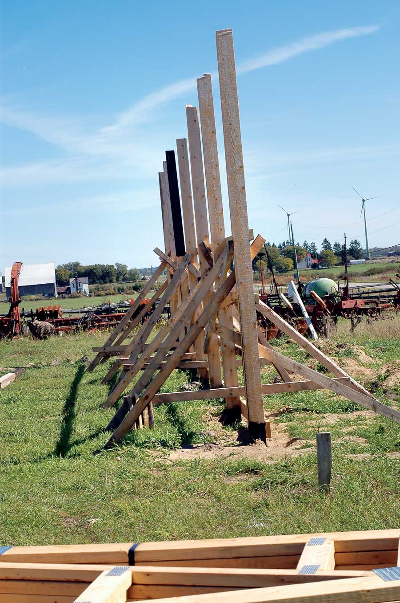

If you need to add shelter to your homestead easily and economically, pole barns are right for you. They’re the fastest, most cost-effective way to build permanent, solid shelter to store equipment, house livestock, or function as a garage or workshop facility. You can even use the pole barn approach to build a year-round home. A big part of the attraction is simplicity. There are only four steps involved in pole-barn building, and the first one’s even optional! None of the work requires fancy tools or finely honed skills.
The steps to pole-building success are simple: Create a level base pad (if you want more than just the earth underfoot), set poles vertically into holes in the ground, connect them across the top with beams and braces, then put roof trusses on top. No need for a complicated foundation, either. Even in regions with cold, frost-prone winters, pole barns endure well with nothing more than the simplest connections to the earth. And if this weren’t advantage enough, pole barns also offer the option of using your own logs and rough-cut lumber for many parts of the job. The only thing wrong with pole barns is the name. This building approach is so much more useful than for building barns alone.
If you’ve never constructed anything large before, then a pole building is a good place to start. The illustration and information you’ll find in this article will equip you to custom build your own durable pole barn based on universal design and building principles. Most building authorities require simple plans for project approval, though many will accept hand-drawn versions. Agricultural extension services across the continent also offer basic pole building plans for free. You can buy fancier ones online. Either way, success ultimately comes down to the kind of hands-on know-how you’ll find here.
Besides the fact that you’ll need to locate your pole building on flat, well-drained ground, consider adding fill to create a raised base area. This isn’t necessary for all applications, though it provides a more level floor space that’s raised enough to keep water from draining in, even during wet seasons.
There are four reasons crushed rock screenings are my favorite choice for a raised base. Screenings are usually less expensive than other types of aggregate because they’re a byproduct at many quarries. Screenings also are small - typically less than a quarter-inch in diameter, with lots of stone dust mixed in. This makes screenings easy to rake and level accurately. They pack down firmly, too. And screenings don’t ruin the future growing potential of soil forever. When your pole barn needs to come down after its working life is over, scrape off the screenings and use them somewhere else. Unlike larger grades of crushed stone, the leftover screenings that the loader can’t remove will disappear when you till the soil.
Before you order any fill for a base, you’ll need to mark out an area to guide the location and level of material required. Read “Stake Your Ground,” below, for tricks that speed this process and the work of laying out wall post locations later.
The plan shows the 8-foot pole spacing that’s common for enclosed walls on most pole-barn designs. You can stretch that to 12-foot spacing on open sides where animal and machine access is required.
Pressure-treated timbers make good poles for small designs, and reclaimed utility poles (as long as they’re in sound condition) or rot-resistant logs cut from your own forest are good for large ones. The key is to select the right diameter poles for the height and spacing you’re planning (check with your local building inspector).
If you have health and environmental concerns about using pressure treated lumber, there’s good news. Today’s most common wood preservative compound, abbreviated ACQ, replaces the arsenic-bearing substance called CCA that was used to preserve wood until 2003.
ACQ is one of a handful of new preservatives that are thought to be significantly safer than CCA. But all these new products do have a downside. They’re much more corrosive to nails, screws and support brackets than CCA ever was. And as you’d expect, this corrosive action is greatly enhanced in the presence of moisture. As a minimum, use hot-dipped galvanized nails and screws when building your pole barn. Better yet, for critical connections where additional fasteners can’t be driven in later, use stainless steel.
Poles should be installed in 5-foot-deep holes, standing on top of concrete footings pre-poured into the bottom of each hole. This gives them the strength needed to support the roof. Does this seem unnecessarily diligent? Don’t fool yourself. The work of installing poles correctly is a small price to pay for a foundation under a building as large as a typical pole barn. And if that foundation should ever fail because it wasn’t properly built, all your other building work (and everything stored in the structure) will be threatened. Chances aren’t worth taking here. Required footing diameter depends on the width of your building, pole spacing, the type of soil you have and the expected loads. Typically, 18- to 24-inch-diameter footings are needed. Poles on open sides of a building must also be anchored vertically, to prevent wind uplift (see illustration).
Another crucial issue is pole length. The top ends of all poles must end at exactly the same plane in the air. And because the depth of pole holes vary, you can’t simply cut all your poles the same length and expect them to work out fine up at the top.
There are two schools of thought when it comes to tackling this challenge. Some people like to bore all holes first, set poles in place temporarily, then mark the tops level before removing the posts, custom-cutting each pole to length on the ground, then setting them back into the holes before bracing and backfilling. I prefer to install all poles permanently, wait for the concrete to harden, then cut the pole tops level following a laser or water level. The price of cutting each pole in the air while you’re on a scaffold seems worth the extra accuracy. It also saves a ton of work lifting poles in and out. Regardless of which approach you choose, use the two-tape method to layout each side of your building with perfectly square corners. (See “Stake Your Ground,” below.)
If the soil in your area freezes solid, anticipate problems from frost jacking. Even if your poles extend below the frost line, they could be lifted by the action of frost gripping the outside surface of the concrete at ground level, if you’ve used concrete to fill the hole around each pole. You can avoid frost jacking by keeping the level of concrete around each pole below any bell-shaped flare-out that might exist near the top of the hole. Stop pouring concrete 6 to 8 inches below ground level, where hole sides are still parallel, and you’ll be fine.
The roof of your pole barn sits on horizontal beams that span the distance between each pole at the top. But before you install these beams, you’ll need to cut all poles to precisely the same height (if you haven’t already). Use your laser level or water level to mark the top ends of all poles before cutting.
When it comes to securing beams on top of poles, you’ve got two options. The plans show both. The first is to notch each pole 8- to 12- inches from the top, then set the beams into these notches and bolt them together. This is tricky, but it saves you the cost of metal connector plates. The other option involves setting the beams on top of the poles and securing the connection with bolted metal plates. Either way, beam size is crucial. Double-check with your local building inspector before settling on a particular beam size.
Fastening beams to poles always involves boring large, deep holes, and for this job you’ll need something called a ship’s auger. This is a type of large drill bit that’s available in various diameters and lengths, depending on your particular situation. Ship’s augers are great because they always include a self-feeding threaded portion on the tip of the bit. Chuck the auger into a large drill, then start drilling. The design of the bit draws itself into the wood, with no pushing required on your part.
The best pole barns include a roof structure that’s self-supporting over the width of the building, eliminating the need for any interior support posts. This is easier than ever thanks to advances in roof trusses. Ready-made trusses are economical, easy to install and readily available in widths up to 40 feet and more. You need to understand three things as you install trusses: safe lifting techniques, the need to brace walls while trusses are going up, and the details required to secure the trusses properly to the beams.
When lifting trusses into place, there’s no substitute for lots of willing hands. One trick for making steady use of help is to raise all trusses up onto the walls at once, then set them side-by-side on the wall, upside down, peak pointing toward the ground. Later, when the crowd is gone, fewer people can tilt the trusses upright, then anchor them to the wall and add roof strapping. Whatever you do, don’t rely on nails alone to hold the trusses to the beams they rest on. Metal connector plates are specially made for this purpose and are well worth the price, especially in areas where severe weather is common.
Pole buildings are more than just practical and economical to build. They’re great confidence boosters, too. When you step back and look at the big, solid structure you’ve built, it makes every other kind of building project seem possible.
Whether you start by laying out boundaries for a crushed stone base, or you simply need to square the footprint of your pole barn, these techniques are crucial to success.
Use 12-inch spikes for the initial layout phase. If you’re marking out your base location, make it extend at least 3 feet beyond where your pole-barn walls will be, except in locations that will include a door. Here you’ll need to extend the base out further to ramp up the screenings from the level of the surrounding soil.
Pound two spikes into the ground to define one side of your base, then locate a second side perfectly square to it, using what I call the two-tape method. Slip the tip of one tape measure over the spike at one end of your base area, then unroll enough tape to get you a little beyond the intended length of the adjoining side you’re laying out. Think of this as your “side tape,” and eyeball it square to the existing side for now. Next, slip the hook of your second tape measure over the spike at the other end of the base side. This is your “diagonal tape.” Somewhere out in the ether is a length on that diagonal tape that yields a square corner when it overlaps the intended length of the second side of the base you’re locating. And to find this magic crisscross point, you need to turn to a high school geometry formula for help:
Length of diagonal tape = Square root of [(Length between spikes on existing base side)²+ (Length of proposed base side)²]
This is the Pythagorean theorem in action. When your diagonal tape overlaps the side tape at the number determined above, you’ve got a perfectly square corner. Guaranteed. It works in every building situation where square corners must be laid out in large scale.
Repeat the process for the other two base sides, then replace the corner spikes with 2-by-2 wooden stakes that are tall enough to extend higher than the deepest part of the crushed stone base you’ll be making. Stretch mason’s line between these stakes, then add more stakes between them - one every 8 to 10 feet. Mark a point at least 6 inches above the soil on the highest stake around the perimeter of your base (the minimum worthwhile thickness of any aggregate base), then use a laser level or water level to mark level points on all stakes. You’ll need one of these tools later for building, even if you aren’t installing a raised base.
Reinstall the strings on the level points you’ve just marked on the stakes to guide the placement, grading and compaction of your base fill material as it’s trucked in, dumped and spread.
The best way to install poles is by supporting them with temporary tripods of wood while concrete and soil is packed in around them. The time you spend screwing braces in place is short compared with the speed you’ll gain by not having someone try to hold the poles steady while backfilling around them.
There are three reasons pole barns usually have metal roofs. The first is installation speed. Most types of metal roofing can be ordered custom-cut to extend from eaves to peak on your particular building, so there are few seams. Metal roofing also eliminates the need for full roof sheathing on top of trusses. All that’s required to anchor metal is 1-by-4 or 2-by-4 strapping nailed across trusses after installation. Durability is the third reason metal is so popular for pole barns. Today’s modern, washer-head screws hold on forever. You’ll find a cordless impact driver with magnetic driver tip ideal for torquing down roof screws. Tap the screw tips into ridges of the sheet metal using a hammer, then drive them the rest of the way with a cordless impact driver fitted with a magnetic driver tip. As you drive the screws, be sure to stop just as the screw head begins to compress the metal.
|
STEVE MAXWELL Pole-barn buildings are simple to build and have the added benefit of design flexibility. |
LEN CHURCHILL The best way to install poles is by supporting them with temporary tripods of wood while concrete and soil is packed in around them. |
 STEVE MAXWELL A metal roof is a great option for a pole barn because it’s fast to install and exceptionally durable. |
|
STEVE MAXWELL A finished pole building makes a great storage shed for equipment, or can be used as a garage, workshop, or shelter for livestock. |
STEVE MAXWELL |
|